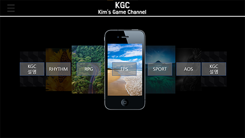
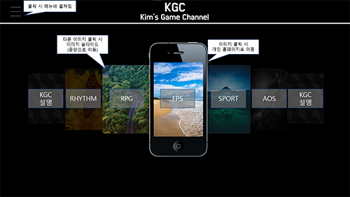
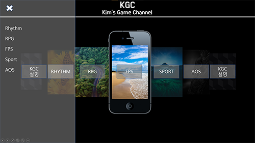
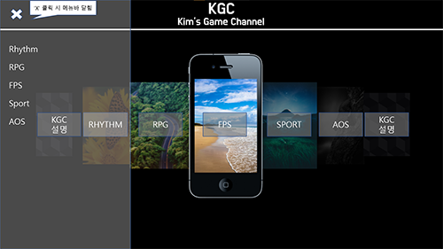

프로젝트 팀 구성 주제 게임 장르에 대한 정보 전달 팀명: KAB (Kim and Boys) 팀장: 전준영 팀원: 정민재, 김준현, 최병준, 김찬욱 팀 홈페이지명 KGC (Kim's Game Channel) 개인 홈페이지명 전준영 - fps.gc (슈팅 게임 장르에 대한 뉴스 등 정보 전달) 정민재 - spo.gc (스포츠 게임 장르에 대한 뉴스 등 정보 전달) 최병준 - aos.gc (AOS 게임 장르에 대한 뉴스 등 정보 전달) 김준현 - rpg.gc (RPG 게임 장르에 대한 뉴스 등 정보 전달) 김찬욱 - rtm.gc (리듬 게임 장르에 대한 뉴스 등 정보 전달) 개인 역할 HTML - 김준현 CSS - 전준영, 정민재 Javascript - 김찬욱, 최병준 프로젝트 도안     프로젝트 도안 사진4개 위 사진대로 만들 예정입니다 (추후 몇몇 정보는 바뀔 수 있음)